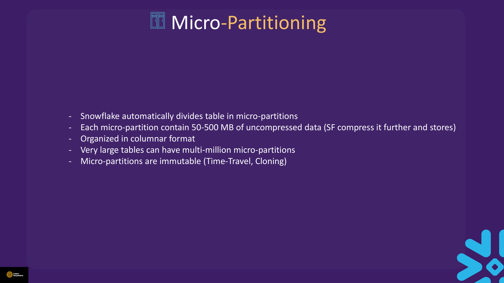
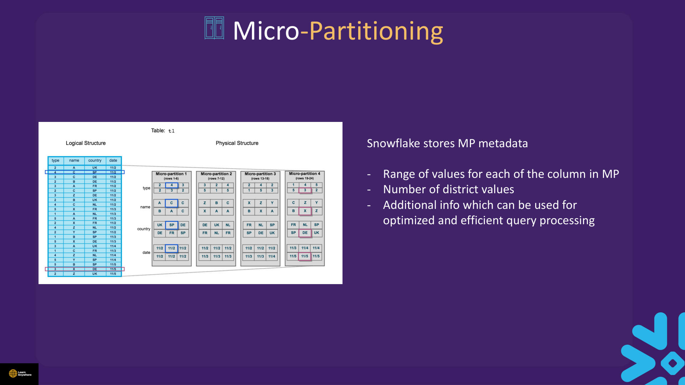
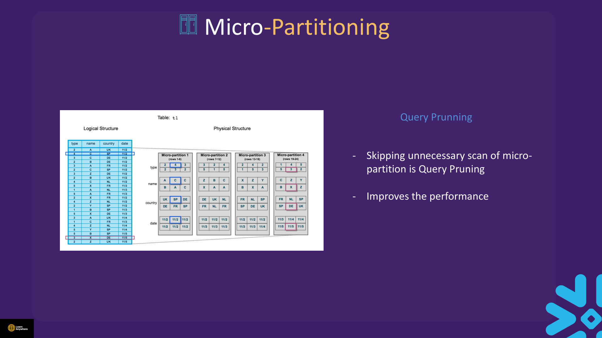
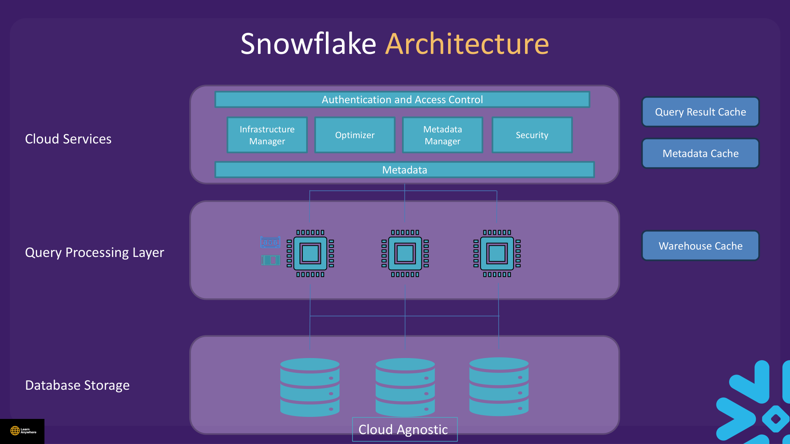
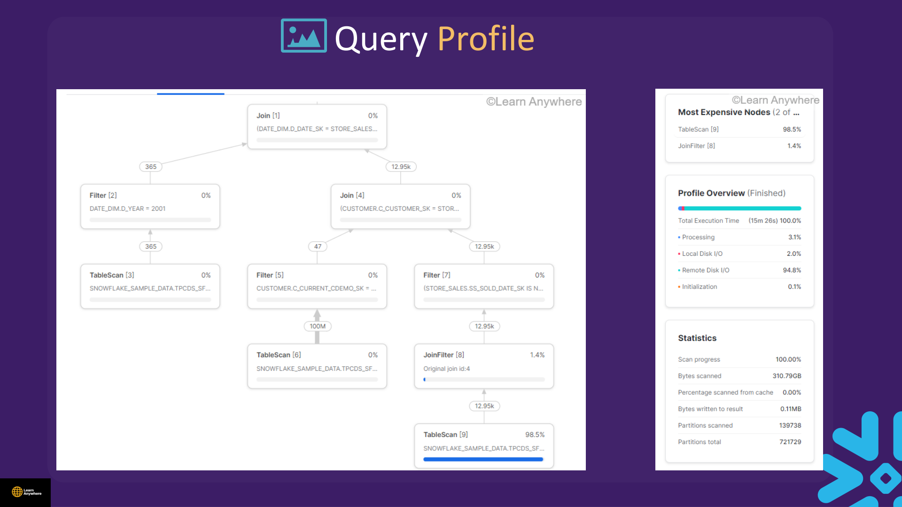
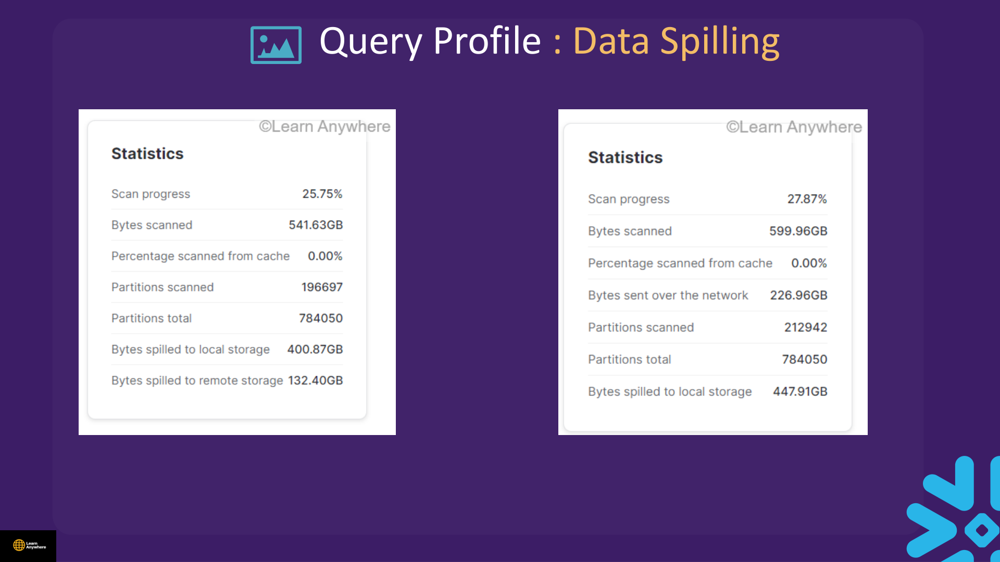
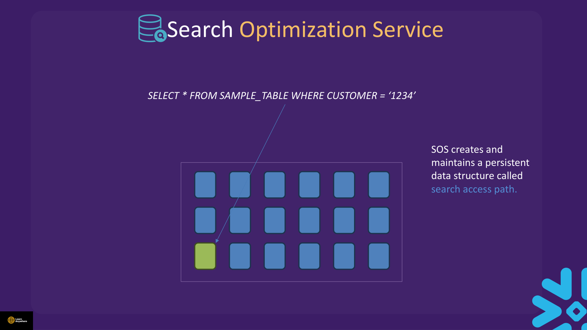
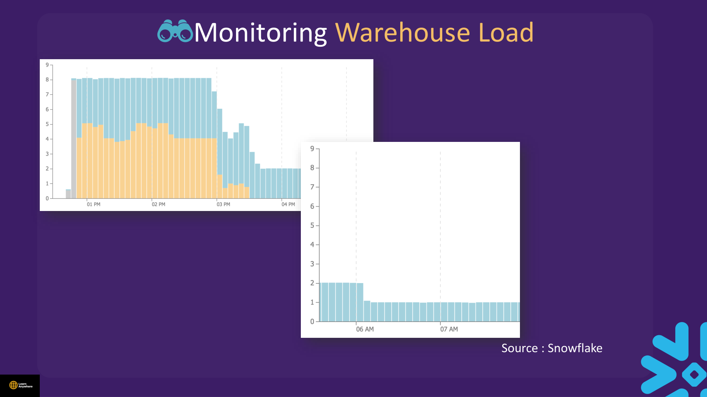
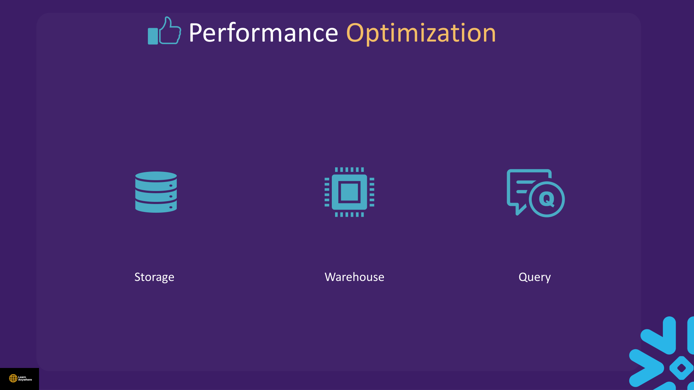

Lectures in this section
Every lecture below links to the notes that cover it.
- Micro Partition Concept 3:50
- Query Pruning Concept 0:59
- Data Clustering Concept 7:34
- Clustering Key Concept 3:32
- Demo : Clustering 5:26 Snowflake Performance/Clustering.txt
- Quiz
- Snowflake Caching Concept 4:49
- Demo : Snowflake Caching 5:04 Snowflake Performance/Caching.txt
- Query Profile Concept 7:53
- Demo : Query Profile 8:20 Snowflake Performance/Query Profile.txt
- Resource Monitoring Concept 2:35
- Demo : Resource Monitoring 5:07
- Quiz
- Search Optimization Service Concept 3:42
- Demo : Search Optimization Service 4:52 Snowflake Performance/Search Optimization Services (SOS).txt
- Demo : Query Acceleration Service 6:18 Snowflake Performance/Query Acceleration Service (QAS).txt
- Demo : Compute and Storage Monitoring 5:01 Snowflake Performance/Storage Check.txt
- Overall Performance Optimization 4:14
- Quiz
Micro-Partitions
Snowflake automatically divides table data into immutable micro-partitions — the unit of pruning, Time Travel, and zero-copy cloning. You never define or manage them manually.
Traditional databases rely on static partitioning to manage performance and scaling. That design creates maintenance overhead and can produce data skew when partition boundaries no longer match how data is loaded or queried. Snowflake sidesteps both problems: the service divides each table into micro-partitions automatically — you never declare partition keys or run repartition jobs.

WHERE sale_date = '2024-01-15', Snowflake reads only cards whose date range could contain that value — skipping entire drawers of irrelevant data.
- Size: Roughly 50–500 MB of uncompressed data per partition (Snowflake compresses further on disk).
- Format: Columnar storage within each partition — excellent for analytic scans.
- Scale: Large tables may contain millions of micro-partitions.
- Immutability: DML creates new partitions; old versions remain for Time Travel.
- Metadata per partition: The range of values for each column, the number of distinct values, and additional statistics Snowflake uses to optimise query processing — all read before any data scan (powers pruning without user-defined indexes).
- Clustering: Optional
CLUSTER BYco-locates related values to reduce overlap and improve pruning on large tables (covered below).

millions of rows
read metadata first
only matching MPs
- Assuming you must create indexes — Snowflake uses micro-partition metadata instead.
- Expecting manual partition management — partitioning is automatic on load.
- Confusing clustering (performance tuning) with micro-partitions (automatic storage units).
Query Pruning
Query pruning means skipping the unnecessary scan of micro-partitions: before reading any column data, the optimizer checks each partition's metadata and ignores partitions whose value ranges cannot satisfy your filter. That is how large tables stay queryable — you pay I/O only for partitions that might contain matching rows.

Each micro-partition stores column min/max, distinct counts, and related statistics — metadata Snowflake reads before touching data.
- Query pruning = skipping partitions whose metadata proves they cannot match your filter.
- No user-defined indexes — pruning uses partition metadata.
- Partitions are immutable; DML creates new versions (supports Time Travel).
- Very large tables may have millions of micro-partitions — pruning quality matters enormously.
YEAR(order_date)) often block pruning — filter on raw column instead: order_date BETWEEN '2024-01-01' AND '2024-12-31'.
Clustering & Clustering Keys
As tables grow, natural load order may scatter filter values across many overlapping micro-partitions. Data clustering is Snowflake's technique for co-locating rows with the same key values in the same micro-partitions — improving query performance and optimising cost by letting pruning skip more partitions per query.
Clustering co-locates same-value data in the same micro-partitions to improve performance and optimise cost.
What clustering gives you
- Automatic background reclustering once you enable it with
CLUSTER BY - Reduces micro-partition scanning on selective filters
- Improves performance on repeated WHERE and ORDER BY patterns
What clustering costs
- Storage — clustered layout may use additional space
- Serverless compute — recluster maintenance credits on an ongoing basis
- Measure before/after; small tables rarely justify the spend
When to consider clustering
Choose a candidate table when most of the following apply:
- Table has a large number of micro-partitions.
- Queries read a small fraction of total rows via
WHEREbut would otherwise scan many partitions. - Queries sort with
ORDER BYon the same columns you filter on. - Many or most queries select or sort on the same few columns.
Clustering metadata
Snowflake tracks clustering quality so you can evaluate keys before and after enabling recluster. The metrics that matter for the exam:
| Metric | Meaning |
|---|---|
| Total micro-partitions | How many partitions the table currently spans. |
| Overlapping partitions | Count of partitions whose column value ranges overlap with other partitions — overlap forces pruning to scan more files than necessary. |
| Clustering depth | Depth of the overlapping partition groups — lower is better. Check with SYSTEM$CLUSTERING_DEPTH('table'). |
The course deck walks through a concrete before/after: an unclustered table shows 5 overlapping partitions at depth 5, with value ranges spanning A–Z across multiple files. After partial clustering, overlap drops to 3 partitions at depth 2 with tighter ranges (A–D, E–J, K–N, etc.). Once reclustering finishes, overlap can reach 0 at depth 1 — each partition owns a disjoint range and pruning becomes maximally effective.
Clustering keys
A clustering key is analogous to an index or key in a traditional RDBMS: a set of columns designed to co-locate related rows within micro-partitions. You declare it once; Snowflake's automatic recluster service maintains the layout.
Key functions & commands
SYSTEM$CLUSTERING_INFORMATION('table', '(col)')— evaluate candidate keys.ALTER TABLE t CLUSTER BY (col)— enable clustering (background recluster credits apply).SYSTEM$CLUSTERING_DEPTH('table')— average overlap depth (lower is better).ALTER TABLE t SUSPEND RECLUSTER/RESUME RECLUSTER— pause/resume maintenance.ALTER TABLE t DROP CLUSTERING KEY— stop clustering.
| Clustering key choice | Guidance |
|---|---|
| Most-used WHERE columns | Pick the column that appears most often in filter predicates — date keys, tenant IDs, and region codes commonly prune well. |
| Join keys | Consider columns used in frequent equi-join predicates. |
| Cardinality balance | Too low → minimal pruning benefit; too high → inefficient grouping and expensive recluster with diminishing returns. |
| Multi-column keys | Order from low to high cardinality (per course guidance). |
USE_CACHED_RESULT = FALSE.
Course file: Snowflake Performance/Clustering.txt
USE ROLE ACCOUNTADMIN;
USE WAREHOUSE COMPUTE_WH;
CREATE DATABASE IF NOT EXISTS <YOUR_DB>;
CREATE SCHEMA IF NOT EXISTS <YOUR_DB>.<YOUR_SCHEMA>;
USE DATABASE <YOUR_DB>;
USE SCHEMA <YOUR_SCHEMA>;
ALTER SESSION SET USE_CACHED_RESULT = FALSE;
CREATE OR REPLACE TABLE cluster_sample AS
SELECT * FROM SNOWFLAKE_SAMPLE_DATA.TPCDS_SF100TCL.STORE_SALES
LIMIT 2000000; -- reduce row count if credits are tight
SELECT * FROM INFORMATION_SCHEMA.TABLES WHERE TABLE_NAME = 'CLUSTER_SAMPLE';
SELECT SYSTEM$CLUSTERING_INFORMATION('CLUSTER_SAMPLE', '(SS_TICKET_NUMBER)');
SELECT SYSTEM$CLUSTERING_INFORMATION('CLUSTER_SAMPLE', '(SS_SOLD_DATE_SK)');
-- Before clustering
SELECT COUNT(*) FROM cluster_sample WHERE ss_sold_date_sk = 2451226;
ALTER TABLE cluster_sample CLUSTER BY (ss_sold_date_sk);
-- After clustering (allow recluster time)
SELECT SYSTEM$CLUSTERING_DEPTH('CLUSTER_SAMPLE');
SELECT COUNT(*) FROM cluster_sample WHERE ss_sold_date_sk = 2451226;
ALTER TABLE cluster_sample SUSPEND RECLUSTER;
ALTER TABLE cluster_sample RESUME RECLUSTER;Cleanup
ALTER TABLE IF EXISTS cluster_sample DROP CLUSTERING KEY;
DROP TABLE IF EXISTS cluster_sample;The Three Caches
Snowflake has three distinct caches at different architectural layers. Confusing them is a frequent exam trap — each lives in a different tier, stores different artefacts, and invalidates under different conditions.

| Cache | Layer | What it stores | Invalidation / notes |
|---|---|---|---|
| Result cache | Cloud Services | Complete query results (24 h TTL) | Exact same query text only; controlled by USE_CACHED_RESULT. Does not work with runtime-evaluated functions such as CURRENT_TIMESTAMP() or UUID_STRING(), with external functions, or when table data, configuration, or micro-partitions change. CURRENT_DATE() is a documented exception — it can still allow a cache hit. |
| Metadata cache | Cloud Services | Table metadata — row counts, MIN/MAX values, distinct counts, and similar statistics | Powers cheap metadata queries; no warehouse required for many SHOW/DESCRIBE/COUNT(*) operations. |
| Warehouse (local disk) cache | Query Processing | Recently scanned micro-partition data cached on worker-node local disk | Local to the warehouse; purged when the warehouse suspends or shuts down. Tune AUTO_SUSPEND: aggressive suspend saves idle credits but cold-starts every session — judge whether keeping the warehouse warm is worth the cache hits. |
CURRENT_TIMESTAMP(), UUID_STRING(), and RANDSTR() force fresh execution. CURRENT_DATE() is the notable exception — it is evaluated once per day and can still produce cache hits. External functions also bypass the result cache.
ALTER SESSION SET USE_CACHED_RESULT = FALSE when benchmarking so a second run does not look artificially fast.
Course file: Snowflake Performance/Caching.txt
ALTER SESSION SET USE_CACHED_RESULT = TRUE;
-- First run: uses warehouse
SELECT * FROM SNOWFLAKE_SAMPLE_DATA.TPCDS_SF100TCL.WEB_RETURNS LIMIT 1000;
-- Repeat exact query within 24h: may hit result cache (0 WH credits)
SELECT * FROM SNOWFLAKE_SAMPLE_DATA.TPCDS_SF100TCL.WEB_RETURNS LIMIT 1000;
-- Documented result-cache blockers
SELECT RANDOM(), *
FROM SNOWFLAKE_SAMPLE_DATA.TPCDS_SF100TCL.INVENTORY LIMIT 100;
-- Metadata cache: COUNT can use cloud services without WH
ALTER WAREHOUSE COMPUTE_WH SUSPEND;
SELECT COUNT(*) FROM SNOWFLAKE_SAMPLE_DATA.TPCDS_SF100TCL.CATALOG_SALES;
ALTER WAREHOUSE COMPUTE_WH RESUME;
-- Warehouse local cache: scan, suspend, resume, re-scan
ALTER SESSION SET USE_CACHED_RESULT = FALSE;
SELECT * FROM SNOWFLAKE_SAMPLE_DATA.TPCDS_SF100TCL.INVENTORY LIMIT 1000;
ALTER WAREHOUSE COMPUTE_WH SUSPEND;
ALTER WAREHOUSE COMPUTE_WH RESUME;
SELECT * FROM SNOWFLAKE_SAMPLE_DATA.TPCDS_SF100TCL.INVENTORY LIMIT 1000;Query Profile
The Query Profile (Snowsight → Query History → select query → Profile) is your X-ray. It shows operators (TableScan, Join, Aggregate), bytes scanned, partitions scanned vs total, spill, and time spent per step.

What to look for first
- Partitions scanned — high ratio means weak pruning or full table scan.
- Bytes scanned — disproportionate to result size? Add filters or clustering.
- Spilling — memory exceeded; warehouse too small or query too heavy.
- Most expensive operator — often TableScan or Join; focus optimisation there.
- Queued time — warehouse overloaded; separate workloads or multi-cluster (Enterprise+).
Data spill
Spilling happens when an operator (sort, join, aggregate) exceeds available memory. Snowflake spills to local disk, then remote storage — dramatically slower. The Profile highlights spill bytes so you can tell whether the warehouse simply needs more memory or the SQL shape is wrong.

Mitigations: scale warehouse up, filter before join, avoid SELECT *, or lower concurrency (MAX_CONCURRENCY_LEVEL).
EXPLAIN plans
EXPLAIN shows the logical plan Snowflake intends to execute — useful for understanding join order and scan types without running the query or spending warehouse credits on the full execution:
EXPLAIN [ USING { TABULAR | JSON | TEXT } ] <statement>;EXPLAIN does not show actual partition counts — use Query Profile after execution for real metrics.
Query history retention
Where you look up past queries depends on how far back you need to reach — a classic exam question:
| Source | Retention | Notes |
|---|---|---|
| Snowsight Query History (Admin → Monitoring) | 14 days | Interactive UI; opens the Query Profile for each query. |
TABLE(INFORMATION_SCHEMA.QUERY_HISTORY(...)) |
7 days | Table function in the current account; good for recent session debugging. |
SNOWFLAKE.ACCOUNT_USAGE.QUERY_HISTORY |
Up to 365 days | Account-wide view; requires appropriate role; latency up to ~45 minutes. Deeper governance views (including access history) are covered in Section 11 — Security & Authentication. |
Course file: Snowflake Performance/Query Profile.txt
Query Profile.txt file contains a broken query with duplicate WHERE clauses and an invalid join alias. Use the corrected version below.
ALTER SESSION SET USE_CACHED_RESULT = FALSE;
SELECT ss.ss_item_sk, ss.ss_customer_sk, ss.ss_ticket_number, ss.ss_net_paid
FROM SNOWFLAKE_SAMPLE_DATA.TPCDS_SF100TCL.STORE_SALES ss
JOIN SNOWFLAKE_SAMPLE_DATA.TPCDS_SF100TCL.CUSTOMER c
ON ss.ss_customer_sk = c.c_customer_sk
JOIN SNOWFLAKE_SAMPLE_DATA.TPCDS_SF100TCL.DATE_DIM d
ON ss.ss_sold_date_sk = d.d_date_sk
WHERE c.c_current_cdemo_sk = c.c_current_hdemo_sk
AND d.d_year = 2001
LIMIT 20000;
-- Open Query Profile in Snowsight for the query_id above
EXPLAIN USING TEXT
SELECT cc_call_center_sk
FROM SNOWFLAKE_SAMPLE_DATA.TPCDS_SF10TCL.CALL_CENTER;
SELECT query_id, start_time, total_elapsed_time, bytes_scanned,
partitions_scanned, partitions_total
FROM TABLE(INFORMATION_SCHEMA.QUERY_HISTORY(RESULT_LIMIT => 10))
ORDER BY start_time DESC;Resource Monitors
Resource monitors track credit usage for user-managed warehouses and cloud services — they do not cover serverless features (Snowpipe, tasks, QAS, Search Optimization maintenance, reclustering, etc.).
- Set at account level or assigned to specific warehouses.
- Define a credit quota (e.g. 100 credits) and reset frequency: daily, weekly, monthly, yearly, or never.
- Three threshold actions when consumption crosses a percentage of quota:
NOTIFY,SUSPEND(finish running queries first),SUSPEND_IMMEDIATELY. NOTIFYcan target specific users viaNOTIFY_USERSin addition to account administrators and monitor owners.
The course deck uses this pattern — note the three escalating triggers and mixed-case user names in quotes:
CREATE OR REPLACE RESOURCE MONITOR limiter
WITH CREDIT_QUOTA = 5000
NOTIFY_USERS = ('jdoe', 'jane smith', 'john doe')
TRIGGERS
ON 75 PERCENT DO NOTIFY
ON 100 PERCENT DO SUSPEND
ON 110 PERCENT DO SUSPEND_IMMEDIATE;
ALTER WAREHOUSE COMPUTE_WH SET RESOURCE_MONITOR = limiter;For study labs, scale the quota down:
CREATE OR REPLACE RESOURCE MONITOR study_monitor
WITH CREDIT_QUOTA = 50
FREQUENCY = MONTHLY
START_TIMESTAMP = IMMEDIATELY
TRIGGERS
ON 75 PERCENT DO NOTIFY
ON 100 PERCENT DO SUSPEND;
ALTER WAREHOUSE COMPUTE_WH SET RESOURCE_MONITOR = study_monitor;
SHOW RESOURCE MONITORS;- Expecting resource monitors to cap Snowpipe or serverless task spend — they will not.
- Sizing up when queries queue — try multi-cluster scale-out first (Enterprise+); see Section 2 for warehouse sizing.
- Ignoring warehouse cache trade-off: very low auto-suspend saves money but cold-starts every session.
Search Optimization Service (SOS)
SOS (Enterprise edition or higher) builds and maintains a persistent auxiliary data structure called the search access path. It significantly improves selective lookup and analytical queries that apply extensive predicate filters — especially on wide tables where normal micro-partition pruning still scans too much data.

Query types SOS improves
- Selective point lookups returning a small number of distinct rows (e.g.
WHERE customer = '1234'). - Substring and regex-style searches with
LIKE,ILIKE, and similar predicates. - Equality and IN predicates on fields inside
VARIANT,OBJECT, orARRAYcolumns. - Queries using selected geospatial functions.
Before you enable SOS
Enable only when profiling shows all three patterns:
- The filtered column has roughly 100 000–200 000 distinct values (high cardinality but not unique-every-row).
- Filters are highly selective — returning very few rows relative to table size.
- The query already runs for at least a few seconds without SOS — you need proof the scan cost is real.
The search access path is updated automatically as table data changes. Track build progress with the search_optimization_progress column in SHOW TABLES. SOS bills for both storage of the access path and maintenance compute.
| SOS vs Clustering | Search Optimization | Clustering |
|---|---|---|
| Mechanism | Additional search access path data structure (extra storage) | Physically reorders rows within micro-partitions on declared key columns |
| Column scope | Can apply to all column types you opt in — not limited to one key | Focused on the declared clustering key column(s) |
| Best for | Highly selective lookups, LIKE/ILIKE, VARIANT path equality | Large tables with repeated range/equality filters on key columns |
Course file: Snowflake Performance/Search Optimization Services (SOS).txt
SELECT APPROX_COUNT_DISTINCT(c_customer_id)
FROM SNOWFLAKE_SAMPLE_DATA.TPCDS_SF100TCL.CUSTOMER;
CREATE OR REPLACE TABLE sos_customer AS
SELECT * FROM SNOWFLAKE_SAMPLE_DATA.TPCDS_SF100TCL.CUSTOMER;
ALTER SESSION SET USE_CACHED_RESULT = FALSE;
-- c_customer_id is CHAR(16) — pick an ID that exists
SELECT c_customer_id FROM sos_customer LIMIT 5;
SELECT * FROM sos_customer
WHERE c_customer_id = (
SELECT c_customer_id FROM sos_customer LIMIT 1
);
ALTER TABLE sos_customer ADD SEARCH OPTIMIZATION ON EQUALITY(c_customer_id);
SHOW TABLES LIKE 'sos_customer'; -- check search_optimization_progress column
SELECT * FROM TABLE(INFORMATION_SCHEMA.SEARCH_OPTIMIZATION_HISTORY());Query Acceleration Service (QAS)
QAS (Enterprise+) adds burst compute to accelerate parts of a warehouse's workload — reducing the impact of outlier queries on an otherwise right-sized warehouse without permanently sizing up for every ad hoc analyst.
QAS suits workloads where scan volume per query is unpredictable:
- Ad hoc analysis — exploratory SQL with unknown data volumes.
- Unpredictable data volume per query — some runs scan millions of rows, others scan thousands.
- Large scan plus selective filter — the classic pattern where pruning helps but the remaining scan is still heavy.
- Enable per warehouse:
ENABLE_QUERY_ACCELERATION = TRUE QUERY_ACCELERATION_MAX_SCALE_FACTORcaps burst parallelism. 0 = no cap (Snowflake may scale up to platform maximum); a positive value (e.g. 8) sets an explicit upper limit. Disabling QAS isENABLE_QUERY_ACCELERATION = FALSE, not scale factor 0.- Check eligibility:
SNOWFLAKE.ACCOUNT_USAGE.QUERY_ACCELERATION_ELIGIBLE - Estimate benefit:
SYSTEM$ESTIMATE_QUERY_ACCELERATION('<query_id>')
Course file: Snowflake Performance/Query Acceleration Service (QAS).txt
QUERY_ACCELERATION_MAX_SCALE_FACTOR = 0 thinking QAS is disabled — 0 means uncapped acceleration. Use a positive cap (e.g. 8) or disable with ENABLE_QUERY_ACCELERATION = FALSE.
SELECT query_id, eligible_query_acceleration_time
FROM SNOWFLAKE.ACCOUNT_USAGE.QUERY_ACCELERATION_ELIGIBLE
ORDER BY eligible_query_acceleration_time DESC
LIMIT 20;
-- After running a heavy query, estimate (replace query_id):
SELECT PARSE_JSON(
SYSTEM$ESTIMATE_QUERY_ACCELERATION('<QUERY_ID>')
);
ALTER WAREHOUSE COMPUTE_WH SET
ENABLE_QUERY_ACCELERATION = TRUE
QUERY_ACCELERATION_MAX_SCALE_FACTOR = 8;
SHOW WAREHOUSES LIKE 'COMPUTE_WH';Compute & Storage Monitoring
Use account usage and information schema views to see where credits and bytes go. These views help validate tuning changes and catch runaway spend.
Warehouse load monitoring
Snowsight exposes warehouse load over time — queued queries, running queries, and cluster utilisation — so you can tell whether slowness is queuing (need another warehouse or multi-cluster) versus execution (need pruning, spill fixes, or a larger size). The Monitoring area is the first place to look when users report "the warehouse is slow" without a specific query ID.

| View | Purpose |
|---|---|
SNOWFLAKE.ACCOUNT_USAGE.WAREHOUSE_METERING_HISTORY |
Compute vs cloud-services credits per warehouse over time |
INFORMATION_SCHEMA.TABLE_STORAGE_METRICS |
Per-table active bytes, Time Travel, Fail-safe in current database |
SNOWFLAKE.ACCOUNT_USAGE.STORAGE_USAGE |
Account-wide storage trend (active + Time Travel + Fail-safe + stages) |
Course file: Snowflake Performance/Storage Check.txt
-- Per-database table storage (local schema)
SELECT * FROM <YOUR_DB>.INFORMATION_SCHEMA.TABLE_STORAGE_METRICS;
-- Sample share database (read-only consumer perspective)
SELECT * FROM SNOWFLAKE_SAMPLE_DATA.INFORMATION_SCHEMA.TABLE_STORAGE_METRICS;
-- Warehouse credit usage (ACCOUNT_USAGE — admin role)
SELECT warehouse_name, start_time, credits_used_compute, credits_used_cloud_services
FROM SNOWFLAKE.ACCOUNT_USAGE.WAREHOUSE_METERING_HISTORY
WHERE start_time >= DATEADD(day, -7, CURRENT_TIMESTAMP())
ORDER BY start_time DESC
LIMIT 50;Overall Performance Optimisation
Snowflake query speed comes from reading less data (pruning), reusing prior work (caches), and right-sizing compute (warehouse + optional accelerators). You rarely “add an index” — you shape data layout, filters, and warehouse size instead. The course groups tuning levers into three buckets: storage, warehouse, and query.

- Reproduce with
USE_CACHED_RESULT = FALSEand note query ID. - Open Query Profile — identify scan %, spill, top operator.
- Improve pruning — tighten WHERE, avoid wrapping filter columns in functions, consider clustering.
- Check caches — if repeat workload, allow result cache; if interactive scratch, shorter auto-suspend may be cheaper than keeping WH warm.
- Right-size warehouse — scale up for spill; scale down when queries are CPU-idle (see Section 2).
- Advanced accelerators — SOS for selective lookups; QAS for proven outlier scans (Enterprise+).
- Separate workloads — ETL warehouse vs BI warehouse; limit concurrent heavy jobs.
- Monitor —
QUERY_HISTORY, warehouse metering, resource monitors.
Storage
- Use clustering on large, selectively queried tables
- Use Search Optimization Service (SOS) for selective lookups
- Use materialised views for repeated expensive transforms
- Purge stage data you no longer need
- Use temporary tables where applicable
- Save on Time Travel via
DATA_RETENTION_TIME_IN_DAYS - Monitor memory consumption and table storage metrics
Warehouse
- Reduce queues — separate workloads or multi-cluster (Enterprise+)
- Resolve memory spillage — right-size or filter earlier
- Right-size the warehouse for execution, not queuing
- Query Acceleration Service (QAS) for outlier scans
- Optimise warehouse cache — balance
AUTO_SUSPENDvs warm cache - Limit concurrent queries with
MAX_CONCURRENCY_LEVEL - Use different warehouses for different tasks
- Monitor compute via metering views and resource monitors
Query
- Use Query Profile statistics to find the expensive operator
- Use Query History — 14 days in UI, 7 in Information Schema, 365 in Account Usage
- Avoid
SELECT *; name only the columns you need - Filter wherever applicable — pruning beats bigger warehouses
Common mistakes
- Scaling warehouse to XL before fixing a full-table scan — you pay more to read everything faster.
- Benchmarking with result cache on — second run looks “magic” but production will not always hit cache.
- Clustering tiny tables — overhead with no pruning gain.
- Enabling SOS on every table — extra storage/compute cost without selective queries.
- Setting
QUERY_ACCELERATION_MAX_SCALE_FACTOR = 0thinking QAS is off — 0 means uncapped acceleration. - Comparing clustering depth without disabling cache or using consistent predicates.
Interview questions
Try to answer each one before opening it.
What is a micro-partition and why is it immutable?Fundamentals
A micro-partition is Snowflake's automatic storage unit — roughly 50–500 MB of uncompressed data per partition, stored columnar and further compressed on disk. Snowflake creates them on load; you never define partitions manually. They are immutable because DML does not overwrite existing partitions in place — inserts, updates, and deletes create new partition versions while old ones remain for Time Travel and Fail-safe. That immutability is what makes pruning metadata trustworthy and cloning cheap.
How does partition pruning work, and what defeats it?Fundamentals
Before reading data, Snowflake scans micro-partition metadata (min/max, NULL counts, distinct counts) and skips partitions whose ranges cannot match your filter. Equality and range predicates on physical columns prune well. Pruning breaks when you wrap the filter column in a function — e.g. YEAR(order_date) instead of a date range — use leading-wildcard LIKE '%x', or cast the column in a way that hides its stored bounds. Fix by filtering on the raw column: order_date BETWEEN '2024-01-01' AND '2024-12-31'.
What is clustering depth, and when is a clustering key worth the reclustering credits?Scenario
SYSTEM$CLUSTERING_DEPTH('table') reports average partition overlap — lower is better. Overlap means filter values scattered across many micro-partitions, so pruning removes fewer partitions per query. A clustering key is worth the serverless recluster cost when the table has a large number of micro-partitions, queries repeatedly filter on the same few columns, and those queries read a small fraction of rows but would otherwise scan many partitions. Evaluate candidates with SYSTEM$CLUSTERING_INFORMATION before enabling ALTER TABLE t CLUSTER BY (col), and measure before/after with USE_CACHED_RESULT = FALSE.
Why should you not cluster a small table?Cost
Small tables have few micro-partitions, so pruning already scans almost everything anyway — clustering cannot meaningfully reduce partition overlap. Reclustering still consumes serverless credits on every maintenance cycle. You pay ongoing cost without a measurable speedup. Save clustering for large tables with proven repeated filter patterns on specific columns.
What are Snowflake's three caches and what invalidates each?Comparison
Result cache (Cloud Services) stores complete query results for 24 hours — invalidated by table changes, config changes, micro-partition changes, and volatile functions like RANDOM(). Metadata cache (Cloud Services) holds table stats and row counts — powers cheap SHOW/DESCRIBE and many COUNT operations without a warehouse. Warehouse cache (local disk on compute nodes) holds recently scanned micro-partition data — cleared when the warehouse suspends. Tune AUTO_SUSPEND to balance warm-cache hits against idle cost.
Why does CURRENT_TIMESTAMP() prevent a result-cache hit even when the SQL text is identical?Gotcha
The result cache requires the exact same query text and unchanged underlying data with no cache-blocking functions. CURRENT_TIMESTAMP() is evaluated at execution time, so each run produces a different result even though the SQL string is identical. Documented blockers like RANDOM(), UUID_STRING(), and RANDSTR() behave similarly. Do not assume date/time functions are cache-safe — benchmark with ALTER SESSION SET USE_CACHED_RESULT = FALSE when tuning.
How do you read a Query Profile to find the root cause of a slow query?Scenario
Open Snowsight → Query History → select the query → Profile. Check partitions scanned vs total first — a high ratio means weak pruning or a full scan. Look at bytes scanned relative to result size. Identify the most expensive operator (often TableScan or Join) and focus optimisation there. Check queued time separately from execution time — queuing means warehouse overload, not slow SQL. Use EXPLAIN for the logical plan, but only the Profile shows actual partition counts after execution.
What is data spill, and what is the difference between local and remote spill?Scenario
Spill happens when a sort, join, or aggregate operator exceeds available memory. Snowflake first spills to local disk on the warehouse node — slower than RAM but still fast. If local space is exhausted, it spills to remote storage, which is dramatically slower. Mitigations: scale the warehouse up for more memory, filter before joining, avoid SELECT *, or reduce concurrency with MAX_CONCURRENCY_LEVEL. Remote spill in the Profile is a strong signal the warehouse is undersized for that query shape.
How do you tell queuing from slow execution, and why does sizing up not fix queuing?Gotcha
In the Query Profile, queued time is time waiting for warehouse capacity; execution time is actual compute. If queued time dominates, the warehouse is overloaded with concurrent queries — making it bigger does not add concurrency slots on a single cluster. Fix queuing by separating workloads onto dedicated warehouses, using multi-cluster warehouses (Enterprise+), or scheduling heavy jobs. Scale up only when execution time is high with spill or CPU-bound operators, not when queries are waiting in line.
When would you choose Search Optimization over clustering, and where does a materialised view fit?Comparison
Clustering reorders rows in micro-partitions — best for large tables with repeated range/equality filters on declared key columns. Search Optimization (SOS) builds auxiliary search structures — best for highly selective point lookups, LIKE/ILIKE, and VARIANT path equality where normal pruning struggles. Both cost ongoing serverless credits. A materialised view pre-computes and stores a result set — best when many queries repeat the same expensive aggregation or join and you can tolerate refresh lag. Use clustering for scan reduction, SOS for selective lookups on wide tables, and MVs for repeated identical transformations.
What is Query Acceleration Service and which queries are eligible?Fundamentals
QAS (Enterprise+) adds burst compute to accelerate parts of expensive queries — especially ad hoc analytics with large scans but selective filters. Enable per warehouse with ENABLE_QUERY_ACCELERATION = TRUE and cap burst with QUERY_ACCELERATION_MAX_SCALE_FACTOR (0 = no cap, not disabled). Check eligibility in SNOWFLAKE.ACCOUNT_USAGE.QUERY_ACCELERATION_ELIGIBLE and estimate benefit with SYSTEM$ESTIMATE_QUERY_ACCELERATION('<query_id>'). QAS helps outlier queries — it is not a replacement for better filters, clustering, or right-sized warehouses.
What do resource monitors cover, and what is their serverless blind spot?Cost
Resource monitors track credit usage for user-managed warehouses and related cloud-services credits assigned to them. Set a quota with reset frequency and threshold actions: NOTIFY, SUSPEND, or SUSPEND_IMMEDIATELY. They do not cap serverless features — Snowpipe, tasks, Search Optimization maintenance, QAS burst, reclustering, storage, or Cortex spend all sit outside monitor scope. Use monitors to guard warehouse burn; use separate governance for serverless and storage.
A BI dashboard got slow last week — how would you investigate methodically?Scenario
Start by reproducing a representative query with USE_CACHED_RESULT = FALSE and note the query ID. Open the Query Profile — check partitions scanned ratio, bytes scanned, spill, and whether time is queued vs executing. Compare against QUERY_HISTORY from last week: did data volume grow, did someone remove a filter, did a warehouse resize or auto-suspend change? Check WAREHOUSE_METERING_HISTORY for concurrency spikes. Improve pruning first (filters, clustering), then cache awareness, then warehouse sizing, then SOS/QAS only for proven pain points. Re-measure after each change.
What does QUERY_ACCELERATION_MAX_SCALE_FACTOR = 0 actually mean?Gotcha
Zero means no cap on burst parallelism — Snowflake may scale QAS up to the platform maximum. It does not disable QAS. To turn QAS off, set ENABLE_QUERY_ACCELERATION = FALSE. A positive value (e.g. 8) sets an explicit upper limit on burst cost. The course demo file incorrectly treats 0 as disabled — that is a common exam trap.
How long does query history persist in Snowsight vs Information Schema vs Account Usage?Exam
Snowsight Query History (Monitoring UI) retains roughly 14 days. TABLE(INFORMATION_SCHEMA.QUERY_HISTORY(...)) covers the last 7 days in the current account. SNOWFLAKE.ACCOUNT_USAGE.QUERY_HISTORY reaches up to 365 days account-wide (with role requirements and up to ~45 minutes latency). Use the UI for interactive profiling, Information Schema for recent programmatic checks, and Account Usage for long-range audits.
Why is CURRENT_DATE() treated differently from CURRENT_TIMESTAMP() for the result cache?Gotcha
The result cache requires identical results, not just identical SQL text. CURRENT_TIMESTAMP() is evaluated at execution time and changes every run, so it blocks a cache hit. CURRENT_DATE() is the documented exception — it resolves once per day, so repeated identical queries within the same day can still hit the result cache. UUID_STRING(), RANDSTR(), and external functions behave like CURRENT_TIMESTAMP() and force fresh execution.
What clustering metadata does Snowflake track, and what do the depth numbers mean?Fundamentals
Snowflake records the total number of micro-partitions, how many partitions have overlapping value ranges, and the depth of those overlaps. High overlap means a selective filter still touches many files — e.g. five partitions each spanning A–Z at depth 5. After clustering, ranges become disjoint (A–D, E–J, …) and depth falls toward 1. Check with SYSTEM$CLUSTERING_DEPTH('table') and evaluate candidate keys with SYSTEM$CLUSTERING_INFORMATION('table', '(col)').
What are the three resource-monitor trigger actions, and who gets notified?Cost
At configurable percentage thresholds of a credit quota: NOTIFY sends alerts, SUSPEND stops the warehouse after running queries finish, and SUSPEND_IMMEDIATELY stops it right away. Use NOTIFY_USERS = (...) to name recipients. Monitors apply to user-managed warehouses and their cloud-services credits — not serverless features. Reset frequency can be daily, weekly, monthly, yearly, or never.
Hands-on practice
Run these in a trial account on an X-Small warehouse with AUTO_SUSPEND = 60. Clean up when you finish.
-
Create
cluster_samplefromSNOWFLAKE_SAMPLE_DATA.TPCDS_SF100TCL.STORE_SALES(limit 2 000 000 rows), runSYSTEM$CLUSTERING_INFORMATIONonSS_SOLD_DATE_SK, thenALTER TABLE cluster_sample CLUSTER BY (ss_sold_date_sk). After a few minutes, compareSYSTEM$CLUSTERING_DEPTHand query runtime forWHERE ss_sold_date_sk = 2451226withUSE_CACHED_RESULT = FALSE.Clustering depth should decrease after reclustering completes, and the filtered COUNT should run faster than before clustering (allow time for background recluster — this consumes serverless recluster credits).
Show solutionSQL
USE ROLE ACCOUNTADMIN; USE WAREHOUSE COMPUTE_WH; ALTER SESSION SET USE_CACHED_RESULT = FALSE; CREATE OR REPLACE TABLE cluster_sample AS SELECT * FROM SNOWFLAKE_SAMPLE_DATA.TPCDS_SF100TCL.STORE_SALES LIMIT 2000000; SELECT SYSTEM$CLUSTERING_INFORMATION('CLUSTER_SAMPLE', '(SS_SOLD_DATE_SK)'); SELECT COUNT(*) FROM cluster_sample WHERE ss_sold_date_sk = 2451226; ALTER TABLE cluster_sample CLUSTER BY (ss_sold_date_sk); -- Wait for recluster, then: SELECT SYSTEM$CLUSTERING_DEPTH('CLUSTER_SAMPLE'); SELECT COUNT(*) FROM cluster_sample WHERE ss_sold_date_sk = 2451226; -
Demonstrate result cache vs warehouse local cache. Run the same
SELECT … LIMIT 1000onWEB_RETURNStwice withUSE_CACHED_RESULT = TRUE, then suspend and resume the warehouse and re-run withUSE_CACHED_RESULT = FALSE.The second identical run with result cache enabled should show near-zero warehouse credits in Query History. After suspend/resume with cache disabled, the warehouse must scan data again — execution time returns to first-run levels.
Show solutionSQL
ALTER SESSION SET USE_CACHED_RESULT = TRUE; SELECT * FROM SNOWFLAKE_SAMPLE_DATA.TPCDS_SF100TCL.WEB_RETURNS LIMIT 1000; SELECT * FROM SNOWFLAKE_SAMPLE_DATA.TPCDS_SF100TCL.WEB_RETURNS LIMIT 1000; ALTER SESSION SET USE_CACHED_RESULT = FALSE; SELECT * FROM SNOWFLAKE_SAMPLE_DATA.TPCDS_SF100TCL.INVENTORY LIMIT 1000; ALTER WAREHOUSE COMPUTE_WH SUSPEND; ALTER WAREHOUSE COMPUTE_WH RESUME; SELECT * FROM SNOWFLAKE_SAMPLE_DATA.TPCDS_SF100TCL.INVENTORY LIMIT 1000; -
Run the corrected three-table join from the Query Profile demo (
STORE_SALES,CUSTOMER,DATE_DIMwithd_year = 2001), then inspectpartitions_scannedandpartitions_totalfromINFORMATION_SCHEMA.QUERY_HISTORY.Query completes with a non-zero row count (up to 20 000). In Query History / Profile, note partitions scanned vs total and the most expensive operator — typically TableScan or Join on the sales table.
Show solutionSQL
ALTER SESSION SET USE_CACHED_RESULT = FALSE; SELECT ss.ss_item_sk, ss.ss_customer_sk, ss.ss_ticket_number, ss.ss_net_paid FROM SNOWFLAKE_SAMPLE_DATA.TPCDS_SF100TCL.STORE_SALES ss JOIN SNOWFLAKE_SAMPLE_DATA.TPCDS_SF100TCL.CUSTOMER c ON ss.ss_customer_sk = c.c_customer_sk JOIN SNOWFLAKE_SAMPLE_DATA.TPCDS_SF100TCL.DATE_DIM d ON ss.ss_sold_date_sk = d.d_date_sk WHERE c.c_current_cdemo_sk = c.c_current_hdemo_sk AND d.d_year = 2001 LIMIT 20000; SELECT query_id, partitions_scanned, partitions_total, bytes_scanned FROM TABLE(INFORMATION_SCHEMA.QUERY_HISTORY(RESULT_LIMIT => 5)) ORDER BY start_time DESC; -
Create
sos_customerfrom the sample CUSTOMER table, run a point lookup onc_customer_id, then add Search Optimization and re-run. CheckINFORMATION_SCHEMA.SEARCH_OPTIMIZATION_HISTORY(). This incurs SOS storage and maintenance credits.Before SOS, the point lookup runs a full micro-partition scan. After
ADD SEARCH OPTIMIZATION ON EQUALITY(c_customer_id)and maintenance completes, the same lookup should run faster. Search optimization history shows build activity.Show solutionSQL
CREATE OR REPLACE TABLE sos_customer AS SELECT * FROM SNOWFLAKE_SAMPLE_DATA.TPCDS_SF100TCL.CUSTOMER; ALTER SESSION SET USE_CACHED_RESULT = FALSE; SELECT * FROM sos_customer WHERE c_customer_id = (SELECT c_customer_id FROM sos_customer LIMIT 1); ALTER TABLE sos_customer ADD SEARCH OPTIMIZATION ON EQUALITY(c_customer_id); SELECT * FROM sos_customer WHERE c_customer_id = (SELECT c_customer_id FROM sos_customer LIMIT 1); SELECT * FROM TABLE(INFORMATION_SCHEMA.SEARCH_OPTIMIZATION_HISTORY()); -
Create resource monitor
study_monitorwith a 50-credit monthly quota and assign it toCOMPUTE_WH, then drop all practice objects created in this section.SHOW RESOURCE MONITORSlistsstudy_monitorwith triggers at 75% NOTIFY and 100% SUSPEND. Cleanup removes clustering key before table drop.Show solutionSQL
CREATE OR REPLACE RESOURCE MONITOR study_monitor WITH CREDIT_QUOTA = 50 FREQUENCY = MONTHLY START_TIMESTAMP = IMMEDIATELY TRIGGERS ON 75 PERCENT DO NOTIFY ON 100 PERCENT DO SUSPEND; ALTER WAREHOUSE COMPUTE_WH SET RESOURCE_MONITOR = study_monitor; SHOW RESOURCE MONITORS; -- Cleanup (order matters) ALTER TABLE IF EXISTS cluster_sample DROP CLUSTERING KEY; DROP TABLE IF EXISTS cluster_sample; DROP TABLE IF EXISTS sos_customer; ALTER WAREHOUSE COMPUTE_WH UNSET RESOURCE_MONITOR; DROP RESOURCE MONITOR IF EXISTS study_monitor; -
Compare query-history retention: pull recent queries from
INFORMATION_SCHEMA.QUERY_HISTORY, then querySNOWFLAKE.ACCOUNT_USAGE.QUERY_HISTORY(if your role allows) for a 30-day lookback. Cross-check one query ID in Snowsight Query History.Information Schema returns only recent activity (~7 days). Account Usage can reach months of history. Snowsight UI covers ~14 days and links to the Query Profile — know all three retentions for the exam.
Show solutionSQL
SELECT query_id, start_time, total_elapsed_time FROM TABLE(INFORMATION_SCHEMA.QUERY_HISTORY(RESULT_LIMIT => 20)) ORDER BY start_time DESC; -- Requires ACCOUNTADMIN or granted role: SELECT query_id, start_time, total_elapsed_time FROM SNOWFLAKE.ACCOUNT_USAGE.QUERY_HISTORY WHERE start_time >= DATEADD(day, -30, CURRENT_TIMESTAMP()) ORDER BY start_time DESC LIMIT 20; -
Create a resource monitor using the deck's three-trigger pattern (
NOTIFYat 75%,SUSPENDat 100%,SUSPEND_IMMEDIATEat 110%) with a small credit quota. Assign it to your study warehouse, then drop it during cleanup.SHOW RESOURCE MONITORSlists the monitor with all three triggers. At 110% the warehouse suspends immediately — stricter than 100%SUSPEND, which lets running queries finish.Show solutionSQL
CREATE OR REPLACE RESOURCE MONITOR deck_pattern WITH CREDIT_QUOTA = 50 FREQUENCY = MONTHLY START_TIMESTAMP = IMMEDIATELY TRIGGERS ON 75 PERCENT DO NOTIFY ON 100 PERCENT DO SUSPEND ON 110 PERCENT DO SUSPEND_IMMEDIATE; ALTER WAREHOUSE COMPUTE_WH SET RESOURCE_MONITOR = deck_pattern; SHOW RESOURCE MONITORS; ALTER WAREHOUSE COMPUTE_WH UNSET RESOURCE_MONITOR; DROP RESOURCE MONITOR IF EXISTS deck_pattern;
Recap
- Micro-partitions enable automatic pruning via column metadata — not manual indexes. Traditional static partitioning causes skew and maintenance overhead; Snowflake avoids both.
- Each micro-partition holds ~50–500 MB uncompressed (columnar); metadata includes value ranges, distinct counts, and optimisation stats.
- Query pruning = skipping micro-partitions whose metadata cannot match your filter.
- Clustering co-locates same-key rows; automatic once enabled; costs storage + serverless recluster credits.
- Clustering metadata: total partitions, overlapping partitions, depth — lower depth is better (
SYSTEM$CLUSTERING_DEPTH). - Clustering keys: most-used WHERE column, join predicates, balance cardinality, multi-column order low→high.
- Query Profile is the primary tuning tool; EXPLAIN shows plan only (
USING TABULAR | JSON | TEXT). - Query history retention: Snowsight 14 days, Information Schema 7 days, Account Usage up to 365 days.
- Three caches: result (24h, Cloud Services), metadata (no WH for many ops), warehouse local (purged on suspend).
- Result cache:
CURRENT_TIMESTAMP()blocks;CURRENT_DATE()is an exception; external functions block. - Resource monitors cap assigned warehouse + cloud-services credits — not serverless. Triggers: NOTIFY, SUSPEND, SUSPEND_IMMEDIATELY.
- SOS (Enterprise+): search access path; ~100K–200K distinct values; check
search_optimization_progressin SHOW TABLES. - QAS bursts outlier query fragments (Enterprise+); scale factor 0 = no cap, positive value = explicit cap.
- Spill = memory pressure → bigger WH, fewer concurrent queries, or leaner SQL.
- Performance tuning buckets: storage (clustering, SOS, MVs, retention), warehouse (queues, spill, QAS, cache), query (Profile, filters, no SELECT *).